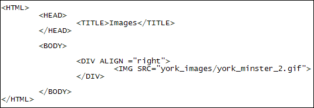
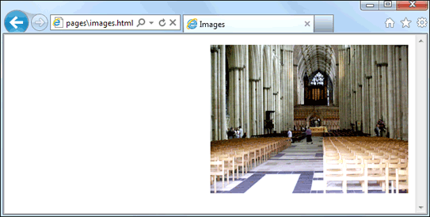
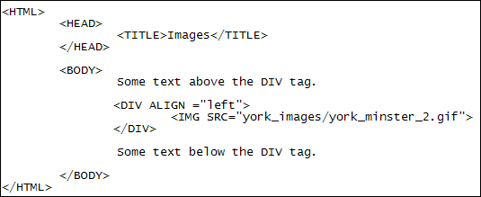
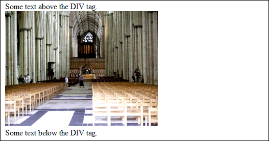

Images and CSS
Before we start, make sure to copy our smaller images over to your york_images images folder, as explained earlier. There should be 5 of these in the files you downloaded for this course: (If you haven't got the extra files yet, the download location is here, under the heading Web Design - New Course : Download the Extra Files needed for this course (You don't need the downloads for the old course.)
york_minster.jpg
york_minster_2.gif
york_minster_3.gif
york_minster_4.gif
york_minster_5.gif
The smaller ones are all GIF images.
In HTML5, image alignment is done using CSS. However, if you just want basic left, right or centre alignment then the DIV tag is quite useful. The DIV tag is an all-purpose tag. It's somewhat like the P tag in that you get a line break after you use it.
To see the DIV tag in action, amend your HTML code to this (we've missed out the DOCTYPE tag at the top):

Here, we're using a pair of DIV tags: <DIV></DIV>. After a space, we've added the attribute ALIGN="right". This will apply to anything between the opening and closing DIV tags. For us, this is the second of the York Minster GIF images.
Save your work and reload the web page in your browser. You should see this:

The other two horizontal values for the ALIGN attribute are left and center (American spelling). Try them out by deleting "right" and replacing it with first <DIV ALIGN="left"> then <DIV ALIGN="center">. Save your work and see what the results are in your browser. (If you just want left alignment then you don't need the DIV tags at all, because left is the default alignment.)
The ALIGN attribute can also be used with the P tag:
<P ALIGN ="center">
<IMG SRC="york_images/york_minster.jpg">
</P>
Again, this will apply to anything between the two tags, including text.
Now add some text above and below the two DIV tags:

When you save your work and view the results, you should see this with a left aligned image:

Notice that the DIV tags has put some space above and below itself: you don't need to add a P tag for the text. But you can if you want - it's always good practice to have your text between P tags.
In the next lesson, you'll see how to wrap text around an image with CSS.